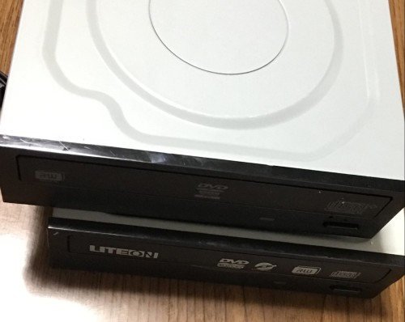

PC自作録 4.ディスクドライブ購入
LITEON DH-16AESH
LITEON iHAS324
前回はこちら
ハードオフにて
東方原作と動画編集をやるためにパソコンを組み立てている。
さて、東方原作をプレイするにはパッケージ版（CD-ROM?）かsteamで購入するかの二択になると思う。
俺はアナログの人間なのでパッケージ版を購入する。
するとディスクドライブが必須となる。
最初はASUSのディスクドライブもいいなと思ったが新品だと3000円ぐらいするのでまあちょっと割高。
いや別に買ってもいいんだけど折角なのでとあるハードオフで中古を探した。
すると、透明ジャンク箱の中にディスクドライブが大量（15個くらい？）に生息している。
価格は550円だったり800円くらいしたりだが新品より遥かに安い。
こうして俺は状態が良いドライブを2つ手に取りレジへと向かったのである。
買ったもの
どちらも10年以上前のものなので動くかどうかは知らないが。

上がDH-16AESH、下がiHAS324。画質悪くてごめんね
それぞれの性能はこんな感じ。
DH-16AESH
インターフェース：SATA
寸法：146(幅)×41(高)×170(奥行)mm
対応メディア：CD,DVD(詳細不明)
購入金額：880円
iHAS324
インターフェース：SATA
寸法：寸法：146(幅)×41(高)×170(奥行)mm
対応メディア：DVD±R,DVD±R DL,DVD+RW,DVD-RW,DVD-ROM,CD-R,CD-RW,CD-ROM
購入金額：550円
前者に関しては情報が少なく、製造元のLITEONのサイトにも載っていなかった。
後者はしっかり情報があり、CD-Rへの書き込みが最大48倍速、CO-ROMの読み込みも48倍速なので普通に使えそう。
まあおそらく東方原作はHDDにインストールすると思われるので速度に関してはそれほど（極端ではない限り）気にしていない。
取り付けとか
ドライブ単体での購入なので取付用のネジが付属していない。
調べてみると、市販のM3×5ねじが使えるみたい。
実際に使ってみたがぴったりだった。
詳しくはケースへの取り付けのときに説明するかも
前回はこちら
 湯豆腐のかたまり──Assemble Yudofu
湯豆腐のかたまり──Assemble Yudofu